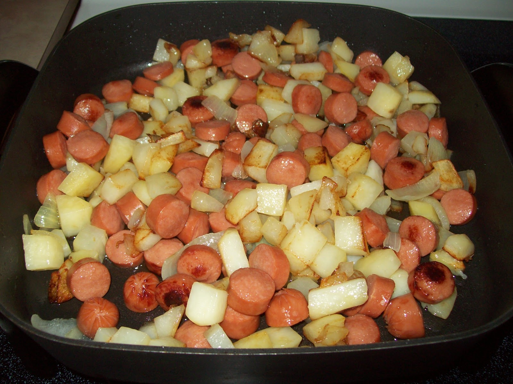
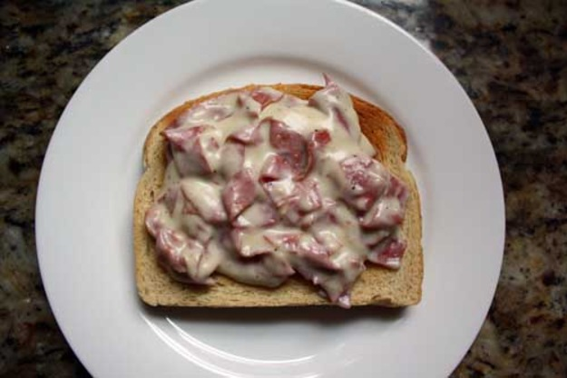
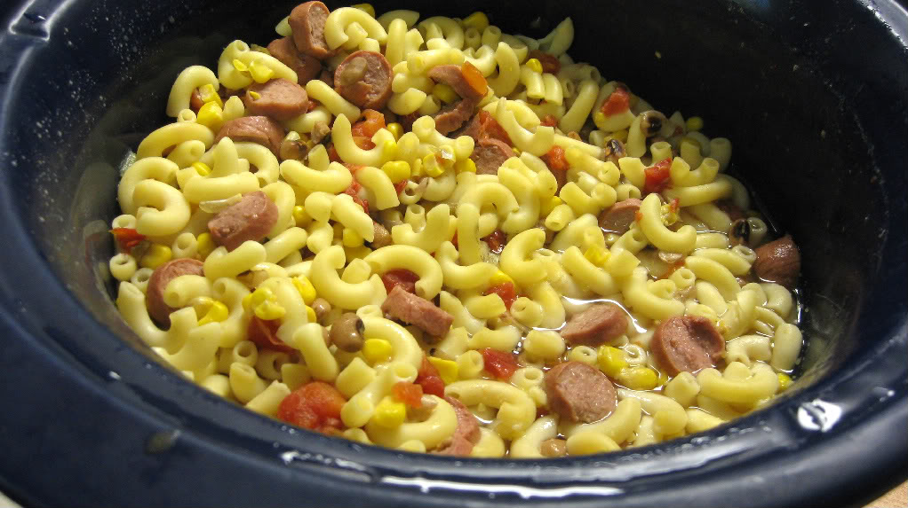

By Sean
It's the 1930’s at the height of the Great Depression. Money is scarce because there are not many jobs. The Dust Bowl crisis has caused many people to move west in search of jobs. Even though California has great weather and plenty of livestock and agriculture, most people are so poor that buying food is a luxury. People have to come up with creative ways to eat cheaply. Here are some recipe ideas that are inexpensive and delicious.
The Poor Man’s Meal - Potatoes and Hot Dogs:
Peel and cube a potato, then fry it in a pan with oil and chopped onions until they brown and soften. Then add slices of hot dog, cook a few minutes more, and serve.
Creamed Chipped Beef:
Melt 2 tablespoons of butter in a pot over medium heat and add 2 tablespoons of flour to make a roux. Slowly whisk in 1.5 cups of milk until it thickens and boils. Later add 8 ounces of dried beef (like Hormel). Serve over toast.
Hoover Steak:
Take a 16-ounce box of noodles like macaroni or spaghetti. While that's on the stove, slice hot dogs into round shapes. Drain the pasta when it’s almost done and return to the pot; drop in the sliced hot dogs. Add two cans of stewed tomatoes and one can of corn or peas (with liquid) to the pot. Bring the mixture to a boil and then simmer until the pasta is finished cooking.
